FOTOĞRAFLAR
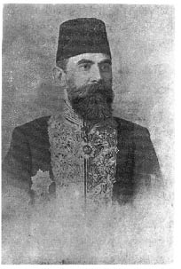
Doğan Avcıoğlu’nun baba tarafından dedesi Defterdar Ali Raif Bey
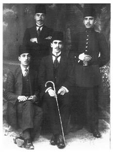
Doğan Avcıoğlu’nun büyükleri bir arada. Ayaktakiler, solda: Cevat Duru, sağda Suriye’de esir düşen amcası Hulusi Bey; oturanlar: solda elinde kitap olan daha sonra iki dönem Bursa milletvekili olacak olan Aziz Duru, sağda elinde baston olan Doğan Avcıoğlu’nun babası Celal Avcıoğlu
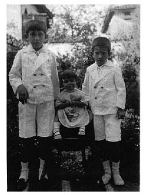
Hamdi, Suna ve Doğan Avcıoğlu
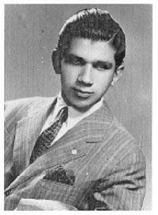
Doğan Avcıoğlu’nun gençlik fotoğrafı
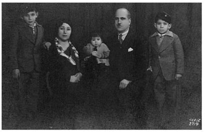
Avcıoğlu ailesi soldan sağa: Hamdi, Pakize, Suna, Celal ve Doğan Avcıoğlu
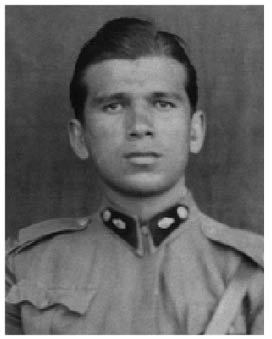
Doğan Avcıoğlu askerliğini Gelibolu’da 1947’de yaptı.
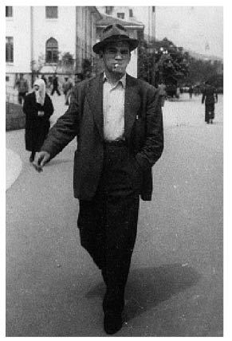
Doğan Avcıoğlu gençlik yıllarında Bursa’da
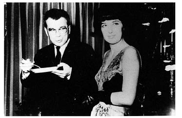
Doğan Avcıoğlu çocuklarının annesi olan ikinci eşi Sevil Yurdakul ile birlikte
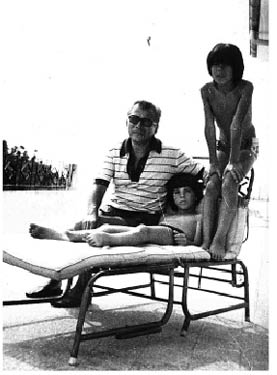
Doğan Avcıoğlu çocukları Murat ve Ahmet ile birlikte
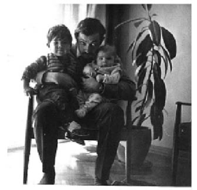
Ahmet ve Murat Avcıoğlu, dayıları Doğan Yurdakul’un kucağında, 1968
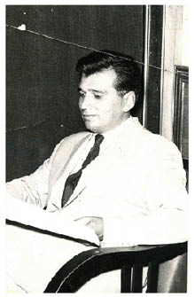
Doğan Avcıoğlu 1959’da CHP Araştırma Bürosu Müdür Yardımcısı
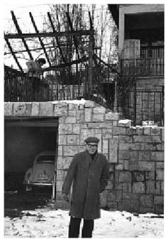
Doğan Avcıoğlu Türkiye’nin Düzeni kitabını yazdığı Dragos’taki evin önünde (1967-68 kışı)
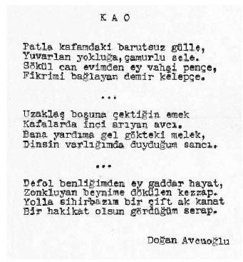
Doğan Avcıoğlu’nun lise yıllarından yazdığı şiirlerinden biri
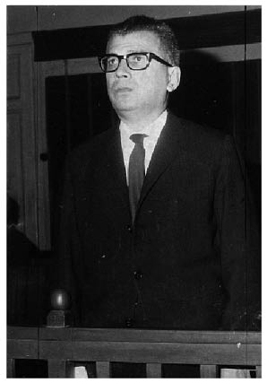
Doğan Avcıoğlu Yön dergisinde çıkan bir yazıdan dolayı sanık kürsüsünde